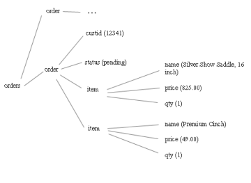
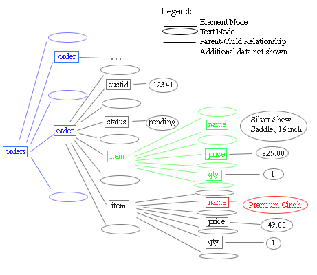
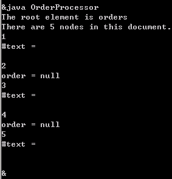
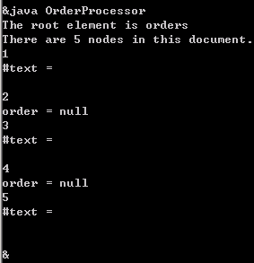

September 16, 2003
DOMAPI学习
 以前的一个DOMAPI学习笔记，最近翻出来整理了一下，并将相关例程加了log4j。学习主要是参照IBM中国DevelopWorks的教程学的，具体见文后的参考文献。
以前的一个DOMAPI学习笔记，最近翻出来整理了一下，并将相关例程加了log4j。学习主要是参照IBM中国DevelopWorks的教程学的，具体见文后的参考文献。
一、几个认识
下面的orders.xml是DOM处理的对象。
{kind=link}
<?xml version="1.0" encoding="UTF-8"?>
<orders xmlns="http://hedong.3322.org/DOMLearning/orderSystem.html">
<order>
<customerid limit="1000">12341</customerid>
<status>pending</status>
<item instock="Y" itemid="SA15">
<name>Silver Show Saddle, 16 inch</name>
<price>825.00</price>
<qty>1</qty>
</item>
<item instock="N" itemid="C49">
<name>Premium Cinch</name>
<price>49.00</price>
<qty>1</qty>
</item>
</order>
<order>
<customerid limit="150">251222</customerid>
<status>pending</status>
<item instock="Y" itemid="WB78">
<name>Winter Blanket (78 inch)</name>
<price>20</price>
<qty>10</qty>
</item>
</order>
</orders>
通过阅读这个xml文件，很容易生成如右上图所示的树状结构。它是所包含数据的精确描述，而不是由 DOM 所表示的数据的精确描述。这是因为它表示元素，而不表示节点。
 DOM是用“节点(Node)”来描述这种树状结构的，节点有多种类型，其中一种是“元素节点”。元素节点是一个信息容器，此处“信息”可以是其它元素节点、文本节点、属性节点或其它类型的信息。正确的DOM对此的结构描述如左图。
矩形框表示元素节点，椭圆形表示文本节点。请注意，orders 元素不是只有两个子节点，而是有五个子节点：两个 order 元素以及这两个元素之间和周围的文本节点。即使 order 元素之间没有内容，这之间的空白组成一个文本节点。这段代码和其运行结果可以验证。
logger.info("get the root");
Element root = doc.getDocumentElement();
System.out.println("The root element is " + root.getNodeName());
logger.info("get the children of the root");
NodeList children = root.getChildNodes();
System.out.println("There are "+children.getLength()+" nodes in this document.");
 logger.info("step through the children");
int i=0;
for (Node child = root.getFirstChild(); child != null; child = child.getNextSibling()) {
i++;
System.out.println(i);
System.out.println(child.getNodeName()+" = "+child.getNodeValue());
}
类似的，item 有七个子节点：name、price、qty 和这三个节点周围的四个文本节点。概念意义上的元素的内容，在这儿被放到其子文本结点的内容那儿了，如“Premium Cinch”是文本节点的内容，它是 name 元素的子节点。注意，此图中仍忽略了属性结点的信息。Element root = doc.getDocumentElement();
System.out.println("The root element is " + root.getNodeName());
logger.info("get the children of the root");
NodeList children = root.getChildNodes();
System.out.println("There are "+children.getLength()+" nodes in this document.");
 logger.info("step through the children");
int i=0;
for (Node child = root.getFirstChild(); child != null; child = child.getNextSibling()) {
i++;
System.out.println(i);
System.out.println(child.getNodeName()+" = "+child.getNodeValue());
}
例程中把属性和结点的信息都显示时遍历结果如下：
orders = null
[ Attribute: xmlns = http://hedong.3322.org/DOMLearning/orderSystem.html]
#text =
order = null
#text =
customerid = null
[ Attribute: limit = 1000]
#text = 12341
#text =
status = null
#text = pending
#text =
item = null
[ Attribute: instock = Y]
[ Attribute: itemid = SA15]
#text =
name = null
#text = Silver Show Saddle, 16 inch
#text =
price = null
#text = 825.00
#text =
qty = null
#text = 1
#text =
#text =
item = null
[ Attribute: instock = N]
[ Attribute: itemid = C49]
#text =
name = null
#text = Premium Cinch
#text =
price = null
#text = 49.00
#text =
qty = null
#text = 1
#text =
#text =
#text =
order = null
#text =
customerid = null
[ Attribute: limit = 150]
#text = 251222
#text =
status = null
#text = pending
#text =
item = null
[ Attribute: instock = Y]
[ Attribute: itemid = WB78]
#text =
name = null
#text = Winter Blanket (78 inch)
#text =
price = null
#text = 20
#text =
qty = null
#text = 10
#text =
#text =
#text =
如果把一个XML文件看作一个关系数据库的表（可能含有子字段的关系表），则可将getElementsByTagName()视作返回某一指定的列的值。
在DOM中，Node和Element不是一回事，Node是Emlement的父类，NodeList是Node的集合。
2、例程可下载
输出结果在dom.log中。
参考文献：
理解DOM
http://www-900.ibm.com/developerWorks/cn/education/xml/x-udom/tutorial/index.html
Comments
Post a comment